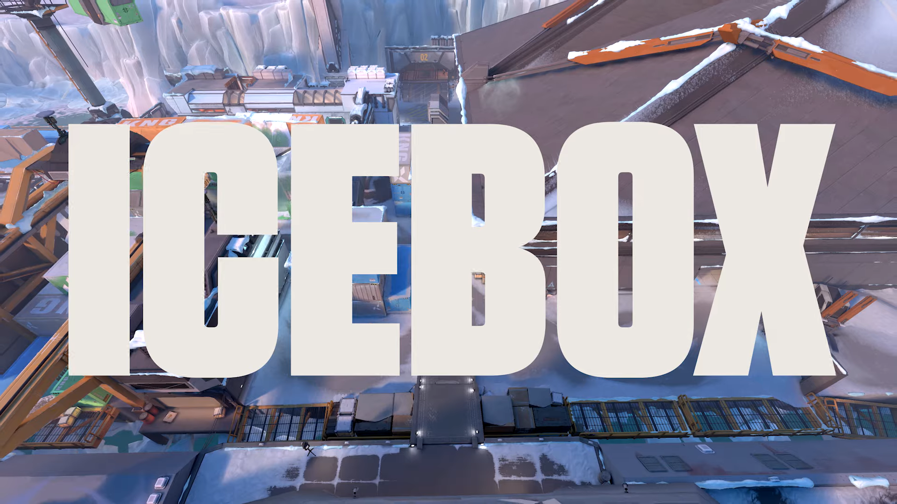
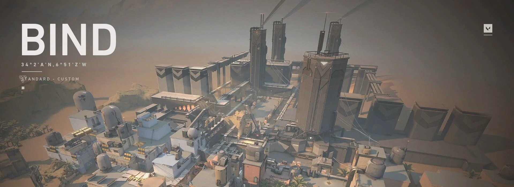
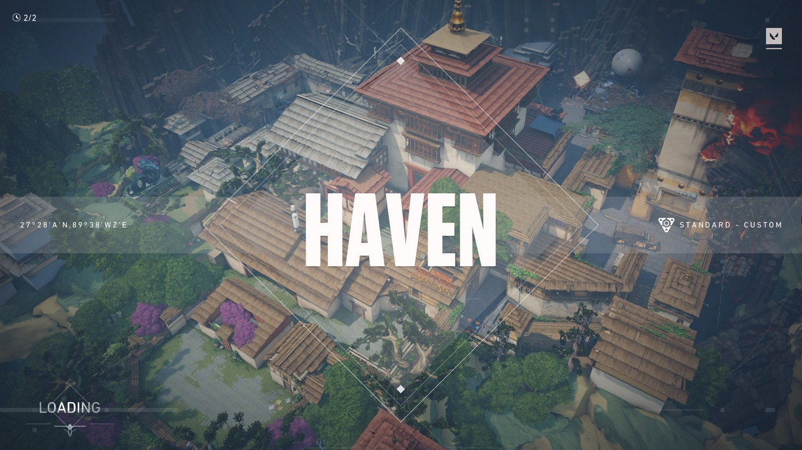
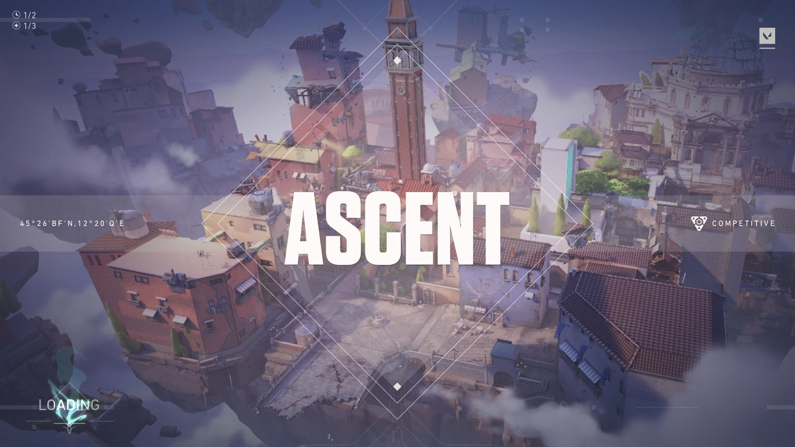
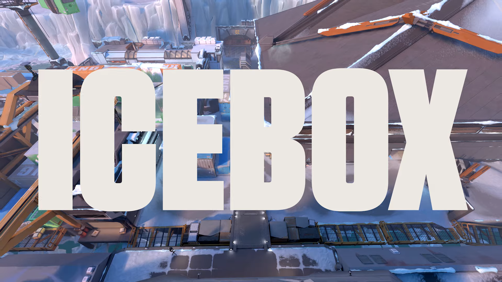
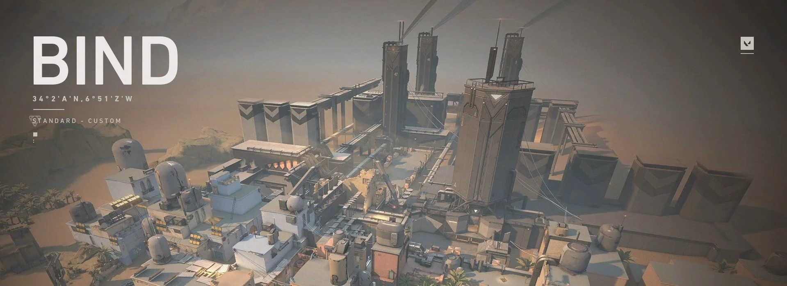
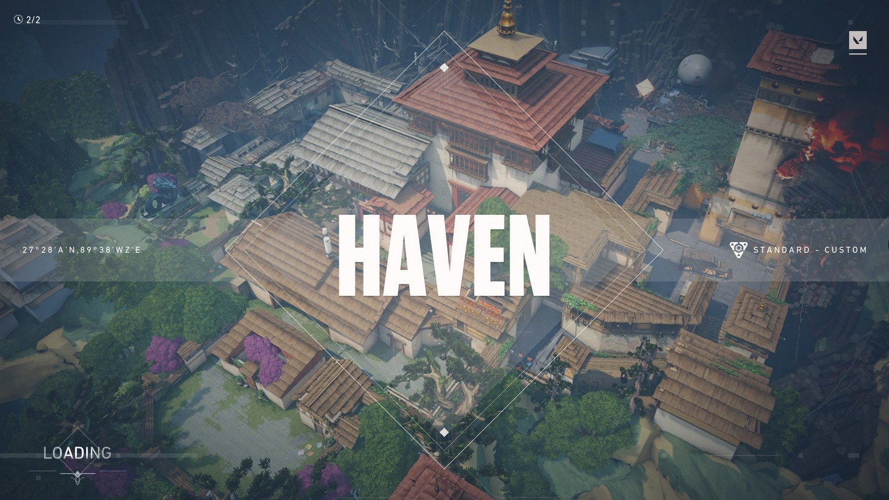
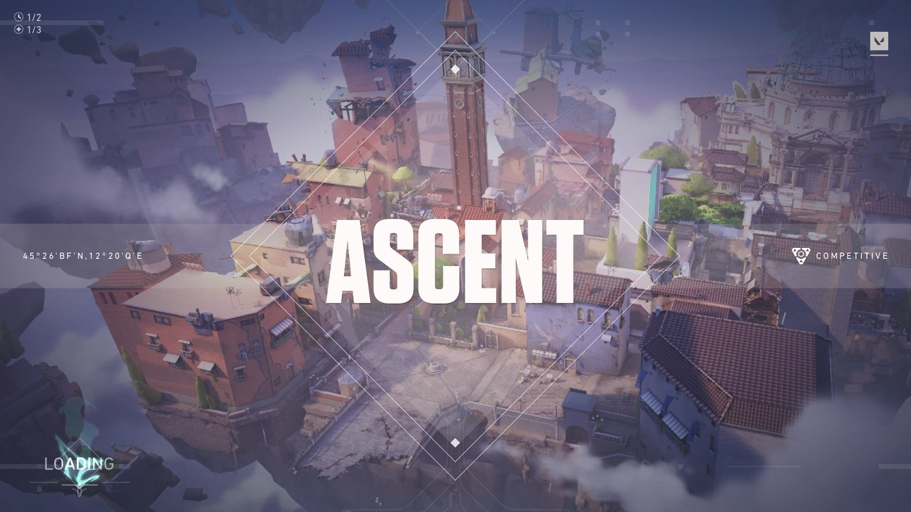

Before you enter your first round, you’ll enter Agent Select. Here you’ll pick from a group of 24 Agents currently, all divided into four different roles based on their functionality. You'll notice that you won't have all the Agents unlocked with a new account. But the more you play, the faster you'll be able to unlock them!
Each Agent has their own unique set of skills designed to work alongside each other toward a win. While it’s not mandatory to have each role in your team of five, you’ll discover that you have a higher chance of winning when your team has a more diverse Agent pool where each player has a specific duty. For example, it’ll be easier to get onto a site if you have a Controller who can smoke the sight lines enemies might be watching!

After everyone selects their Agent, you’ll jump into a random map and formally enter the first round.
You’ll start a round as either an attacker or defender and switch sides after 12 rounds. Before each round officially starts, you’ll have a period of time where you can buy items and skills to prepare for the round. Your Agent and playstyle should influence what you want to buy based on the amount of credits you have. Do you want to purchase a skill that heals your team or do you want a stronger weapon to defeat your enemies?

In VALORANT, there’s a gun for every situation. You can comb the details of each weapon on our dedicated arsenal page.
When in doubt, try buying based on a weapon’s type and see how it fits your style, expertise, and your team’s strategy. Since you won’t always be able to afford the weapon you want, experiment with different ones to figure out which ones you like the most so you can be ready for every situation.

There are currently 10 maps in VALORANT that you can check out here and each one is a different stage to style on your enemies. Flex your creative skills and savvy gunplay to implement different strategies depending on the map you play. Learn and remember them so you can figure out where your enemies can come from and watch those angles. Don’t forget to check your corners!
You may prefer playing certain Agents on certain maps more based on your playstyle. Some maps have high platforms that will make an Agent that allows you to jump or teleport there more enticing.
 







Now that you know the basics, there are a few other details you’ll need to remember that’ll help you execute your plan. Throughout each round, ask yourself: ‘Do I want the enemies to hear me run up or should I walk?’ ‘Can I use an ability to help me achieve my next goal?’ And when you see an enemy, stay calm. Stop moving before shooting to be more accurate.